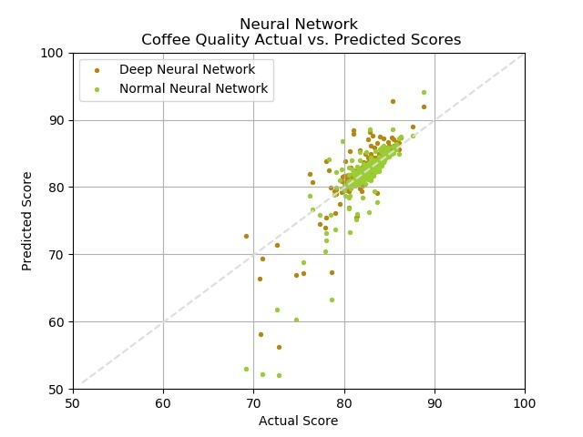

The last models trained on our coffee quality data were two neural networks--deep and normal. We used a linear output activation and mean_squared_error and mean_absolute_error for our loss functions. The normal neural network performed with a final loss of about 10.15 and a mean absolute error of 1.66, which is an improvement from 5445.12 and 73.41, respectively, on the initial epoch. After adding more hidden layers, the deep neural network performed with an even lower loss of 1.92 and mean absolute error of 0.91.
Again, we plotted the predicted/actual scores for these two models on the same plot for comparison. We also added a diagonal line (coeff=1) to show more clearly where the accurate predictions should lie. We found that while the two models were similar, the deep neural network's outliers were closer to the diagonal line than the normal neural network's outliers, indicating the predictions were more accurate for the deep network.
